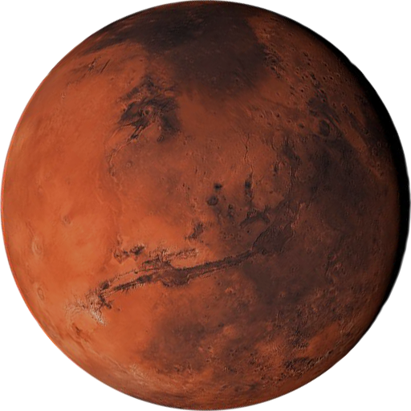

Марс
Четвёртая по удалённости от Солнца и седьмая по размеру планета Солнечной системы. Названа в честь Марса — древнеримского бога войны, соответствующего древнегреческому Аресу.
радиус
3390 км
спутники
Фобос и Деймос
тип планеты
планета земной группы
кольца
Отсутствуют
01
обзор
Первые известные наблюдения за небесным соседом проводились во времена фараонов в Египте, за полторы тысячи лет до нашей эры. Древним астрономам удалось обнаружить «обратное» движение планеты и определить её место на небосклоне между Землёй, поясом астероидов и Юпитером.
02
Особенности
Причиной красноватого оттенка планеты является оксид железа. Попросту: ржавчина, составляющая основную часть пыли. Она покрывает Марс слоем от нескольких миллиметров до двух метров (нагорье Фарсида). Оксид железа с помощью ветров, создающих восходящие потоки воздуха, поднимается в атмосферу.
солнечные сутки
10 часов и 33 минуты
орбитальная скорость
около 9,7 км/с
температура поверхности
-178 градусов Цельсия
03
Строение
Структура Марса такова, что центр значительно более плотный, чем окружающие слои. Что касается коры и мантии то, как видно из таблицы, они в два раза легче. Средняя плотность планеты указывает на её каменистое строение.
04
атмосфера
Атмосфера планеты чрезвычайно разрежена – 1 % от величины атмосферного давления Земли. На нашей планете, чтобы получить марсианские условия (в плане силового воздействия газо-воздушного столба), требуется подняться на 35 километров.
Газовая оболочка Марса на 95 % состоит из углекислоты, но вследствие её тонкости, парникового эффекта на планете не наблюдается. Однако вода есть. Хотя не в жидком состоянии. Огромные полярные «шапки» H2O насыщают воздух водяным паром. Исследователи уверены, что обнаружат «моря» внутри планеты. Возможно даже на небольшой глубине.